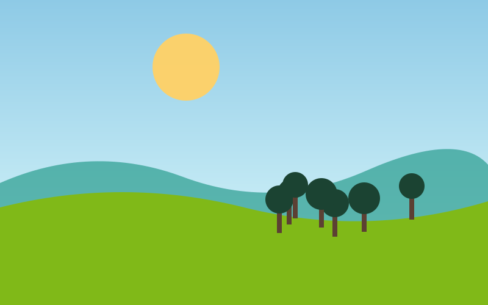

A Proud Language
Bangla (Bengali) is the heart of the nation's identity. On 21 February 1952, students gave their lives defending their right to speak it, and today that day is celebrated worldwide as International Mother Language Day.
Bangladesh also has a rich literary and musical tradition, from the songs of Rabindranath Tagore and Kazi Nazrul Islam to the folk music of the Baul mystics, which UNESCO recognises as cultural heritage.

Pohela Boishakh
Pohela Boishakh, the Bengali New Year on 14 April, is the biggest cultural festival in the country. People dress in red and white, join the colourful Mangal Shobhajatra procession and enjoy panta bhat with fried hilsa.
Other important celebrations include the two Eids, Durga Puja, Christmas and Buddha Purnima, showing the country's long tradition of different communities celebrating together.